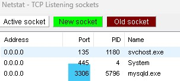
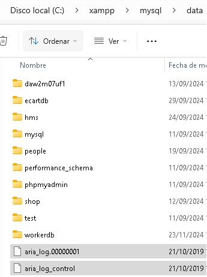
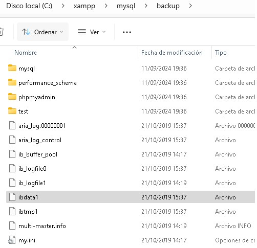

1. Introducción a MySQL
MySQL es un sistema de gestión de bases de datos relacional (RDBMS) de código abierto. Es una de las bases de datos más populares en el mundo del desarrollo web debido a su facilidad de uso, rendimiento y confiabilidad.
Una base de datos es una colección organizada de datos estructurados que permite almacenar, recuperar, actualizar y eliminar información de manera eficiente.
1.1. Conceptos fundamentales
- Base de datos: Conjunto de tablas relacionadas.
- Tabla: Estructura bidimensional con filas y columnas.
- Fila (registro): Cada registro dentro de una tabla.
- Columna (campo): Atributo o propiedad de los datos.
- Clave primaria: Identificador único de cada registro.
- Clave foránea: Referencia a la clave primaria de otra tabla.
1.2. Modelo relacional
MySQL utiliza el modelo relacional, donde los datos se organizan en tablas y las relaciones entre tablas se establecen mediante claves. Este modelo garantiza la integridad y consistencia de los datos.
2. Creación de Bases de Datos y Tablas
Antes de almacenar datos, debemos crear una base de datos y las tablas que la compondrán. Las tablas definen la estructura de los datos mediante columnas con tipos de datos específicos.
2.1. Crear una base de datos
-- Crear una nueva base de datos
CREATE DATABASE tienda;
-- Crear una base de datos solo si no existe
CREATE DATABASE IF NOT EXISTS tienda;
-- Ver todas las bases de datos
SHOW DATABASES;
-- Seleccionar una base de datos para trabajar con ella
USE tienda;
2.2. Tipos de datos comunes
| Tipo de dato | Descripción | Ejemplo |
|---|---|---|
INT |
Número entero | 42, -10 |
VARCHAR(n) |
Texto variable hasta n caracteres | 'Juan', 'María López' |
DECIMAL(p,s) |
Número decimal con precisión | 99.99, 1234.56 |
DATE |
Fecha (YYYY-MM-DD) | '2025-01-15' |
DATETIME |
Fecha y hora | '2025-01-15 14:30:00' |
BOOLEAN |
Verdadero (1) o falso (0) | TRUE, FALSE |
TEXT |
Texto largo | Descripciones, comentarios |
2.3. Crear tablas
-- Crear tabla de clientes
CREATE TABLE clientes (
id INT PRIMARY KEY AUTO_INCREMENT,
nombre VARCHAR(100) NOT NULL,
email VARCHAR(100) UNIQUE NOT NULL,
telefono VARCHAR(15),
fecha_registro DATE DEFAULT CURDATE(),
activo BOOLEAN DEFAULT TRUE
);
-- Crear tabla de productos
CREATE TABLE productos (
id INT PRIMARY KEY AUTO_INCREMENT,
nombre VARCHAR(150) NOT NULL,
descripcion TEXT,
precio DECIMAL(10, 2) NOT NULL,
stock INT NOT NULL DEFAULT 0,
fecha_creacion DATETIME DEFAULT CURRENT_TIMESTAMP
);
-- Crear tabla de pedidos con claves foráneas
CREATE TABLE pedidos (
id INT PRIMARY KEY AUTO_INCREMENT,
cliente_id INT NOT NULL,
fecha_pedido DATE NOT NULL,
total DECIMAL(10, 2),
estado VARCHAR(20) DEFAULT 'pendiente',
FOREIGN KEY (cliente_id) REFERENCES clientes(id)
);
-- Ver estructura de una tabla
DESCRIBE clientes;
-- o
SHOW COLUMNS FROM clientes;
Nota: NOT NULL obliga a que el campo siempre tenga un valor.
UNIQUE asegura que no haya duplicados. AUTO_INCREMENT genera
automáticamente valores secuenciales para identificadores.
3. Inserción de Datos
Una vez creadas las tablas, podemos insertar datos usando la sentencia INSERT INTO.
Los datos deben respetar los tipos y restricciones definidos en la tabla.
3.1. Insertar un registro
-- Insertar un cliente
INSERT INTO clientes (nombre, email, telefono)
VALUES ('Juan García', 'juan@email.com', '612345678');
-- Insertar especificando todas las columnas en orden
INSERT INTO clientes
VALUES (NULL, 'María López', 'maria@email.com', '687654321', '2025-01-15', TRUE);
3.2. Insertar múltiples registros
-- Insertar varios clientes a la vez
INSERT INTO clientes (nombre, email, telefono) VALUES
('Carlos Martínez', 'carlos@email.com', '655555555'),
('Ana Fernández', 'ana@email.com', '666666666'),
('Pedro Sánchez', 'pedro@email.com', '677777777');
-- Insertar productos
INSERT INTO productos (nombre, descripcion, precio, stock) VALUES
('Laptop', 'Computadora portátil de 15 pulgadas', 799.99, 5),
('Mouse', 'Mouse inalámbrico', 29.99, 50),
('Teclado', 'Teclado mecánico RGB', 149.99, 10);
3.3. Insertar con referencias (claves foráneas)
-- Insertar pedidos asociados a clientes
INSERT INTO pedidos (cliente_id, fecha_pedido, total, estado) VALUES
(1, '2025-01-15', 829.98, 'completado'),
(2, '2025-01-16', 179.98, 'pendiente'),
(3, '2025-01-17', 949.97, 'en envío');
4. Consultas - SELECT
La sentencia SELECT es la más utilizada en SQL. Permite recuperar y filtrar datos
de una o más tablas de manera flexible y poderosa.
4.1. Consultas básicas
-- Seleccionar todas las columnas de una tabla
SELECT * FROM clientes;
-- Seleccionar columnas específicas
SELECT nombre, email FROM clientes;
-- Seleccionar con alias (renombrar columnas)
SELECT nombre AS 'Nombre del Cliente', email AS 'Correo Electrónico' FROM clientes;
4.2. Filtrado con WHERE
-- Buscar un cliente específico
SELECT * FROM clientes WHERE nombre = 'Juan García';
-- Buscar clientes con email específico
SELECT * FROM clientes WHERE email LIKE '%gmail.com';
-- Buscar productos con precio mayor a 100
SELECT * FROM productos WHERE precio > 100;
-- Buscar con múltiples condiciones (AND, OR)
SELECT * FROM productos WHERE precio > 50 AND stock > 0;
SELECT * FROM clientes WHERE nombre LIKE 'Juan%' OR nombre LIKE 'María%';
-- Buscar con negación (NOT)
SELECT * FROM clientes WHERE NOT activo = FALSE;
4.3. Ordenamiento y límite
-- Ordenar resultados de forma ascendente
SELECT * FROM productos ORDER BY precio ASC;
-- Ordenar de forma descendente
SELECT * FROM productos ORDER BY precio DESC;
-- Ordenar por múltiples columnas
SELECT * FROM clientes ORDER BY nombre ASC, email DESC;
-- Limitar el número de resultados
SELECT * FROM productos LIMIT 5;
-- Obtener los 10 productos más caros
SELECT * FROM productos ORDER BY precio DESC LIMIT 10;
-- Paginación (mostrar resultados del 11 al 20)
SELECT * FROM productos LIMIT 10, 10;
4.4. Funciones de agregación
-- Contar registros
SELECT COUNT(*) FROM clientes;
SELECT COUNT(*) AS total_clientes FROM clientes;
-- Obtener el precio máximo y mínimo
SELECT MAX(precio) AS precio_maximo FROM productos;
SELECT MIN(precio) AS precio_minimo FROM productos;
-- Sumar valores
SELECT SUM(stock) AS stock_total FROM productos;
-- Calcular el promedio
SELECT AVG(precio) AS precio_promedio FROM productos;
-- Agrupar datos
SELECT estado, COUNT(*) AS cantidad FROM pedidos GROUP BY estado;
SELECT precio, COUNT(*) AS cantidad FROM productos GROUP BY precio;
5. Actualización y Eliminación de Datos
Las sentencias UPDATE y DELETE permiten modificar o eliminar datos
de las tablas. Es importante usar WHERE para especificar qué registros afectar.
5.1. Actualizar registros
-- Actualizar el email de un cliente
UPDATE clientes SET email = 'juan.nuevo@email.com' WHERE id = 1;
-- Actualizar múltiples columnas
UPDATE clientes
SET email = 'maria.nueva@email.com', telefono = '699999999'
WHERE nombre = 'María López';
-- Actualizar con expresiones
UPDATE productos SET precio = precio * 1.10 WHERE stock < 5;
-- Actualizar múltiples registros basándose en una condición
UPDATE pedidos SET estado = 'completado' WHERE fecha_pedido < '2025-01-15';
⚠️ Advertencia: Siempre usa WHERE en UPDATE y DELETE.
Sin WHERE, afectarás todos los registros de la tabla.
5.2. Eliminar registros
-- Eliminar un cliente específico
DELETE FROM clientes WHERE id = 5;
-- Eliminar múltiples registros
DELETE FROM pedidos WHERE estado = 'cancelado';
-- Eliminar productos sin stock
DELETE FROM productos WHERE stock = 0;
-- Vaciar una tabla completa (¡ten cuidado!)
DELETE FROM clientes; -- Elimina todos los clientes
6. Combinación de Tablas - JOINS
Los JOINs permiten combinar datos de múltiples tablas basándose en relaciones entre ellas. Son fundamentales para trabajar con bases de datos relacionales.
6.1. INNER JOIN
Devuelve solo los registros que tienen coincidencias en ambas tablas.
-- Obtener pedidos con información del cliente
SELECT pedidos.id, clientes.nombre, pedidos.fecha_pedido, pedidos.total
FROM pedidos
INNER JOIN clientes ON pedidos.cliente_id = clientes.id;
-- Obtener pedidos con detalles del cliente (usando alias)
SELECT p.id AS pedido_id, c.nombre, c.email, p.fecha_pedido
FROM pedidos p
INNER JOIN clientes c ON p.cliente_id = c.id
ORDER BY p.fecha_pedido DESC;
6.2. LEFT JOIN
Devuelve todos los registros de la tabla izquierda, incluso si no tienen coincidencia en la derecha.
-- Obtener todos los clientes y sus pedidos (si los tienen)
SELECT c.nombre, p.id AS pedido_id, p.total
FROM clientes c
LEFT JOIN pedidos p ON c.id = p.cliente_id
ORDER BY c.nombre;
-- Encontrar clientes sin pedidos
SELECT c.nombre
FROM clientes c
LEFT JOIN pedidos p ON c.id = p.cliente_id
WHERE p.id IS NULL;
6.3. JOIN con múltiples tablas
-- Obtener información completa de pedidos con cliente y producto
SELECT
p.id AS pedido_id,
c.nombre AS cliente,
prod.nombre AS producto,
p.total,
p.fecha_pedido
FROM pedidos p
INNER JOIN clientes c ON p.cliente_id = c.id
INNER JOIN productos prod ON p.id = prod.id
ORDER BY p.fecha_pedido DESC;
7. Índices
Los índices son estructuras de datos que mejoran la velocidad de búsqueda en las tablas. Sin embargo, ralentizan las inserciones y actualizaciones, por lo que deben usarse estratégicamente.
7.1. Crear índices
-- Crear un índice simple
CREATE INDEX idx_email ON clientes(email);
-- Crear un índice en múltiples columnas
CREATE INDEX idx_nombre_apellido ON clientes(nombre, email);
-- Crear un índice único
CREATE UNIQUE INDEX idx_email_unico ON clientes(email);
-- Ver los índices de una tabla
SHOW INDEX FROM clientes;
-- Eliminar un índice
DROP INDEX idx_email ON clientes;
7.2. Cuándo usar índices
- En columnas que se usan frecuentemente en cláusulas
WHERE. - En claves foráneas.
- En columnas usadas en
JOINyORDER BY. - Evitar en columnas con pocos valores únicos.
- Evitar crear demasiados índices (impacta en el rendimiento de inserciones).
8. Vistas (Views)
Una vista es una consulta SQL almacenada que se puede usar como si fuera una tabla virtual. Las vistas no almacenan datos, sino que los generan dinámicamente al consultarlos.
8.1. Crear vistas
-- Crear una vista simple
CREATE VIEW vista_clientes_activos AS
SELECT id, nombre, email FROM clientes WHERE activo = TRUE;
-- Consultar una vista (como si fuera una tabla)
SELECT * FROM vista_clientes_activos;
-- Crear una vista con JOINs
CREATE VIEW vista_pedidos_completo AS
SELECT
p.id AS pedido_id,
c.nombre AS cliente,
p.fecha_pedido,
p.total,
p.estado
FROM pedidos p
INNER JOIN clientes c ON p.cliente_id = c.id;
-- Consultar la vista
SELECT * FROM vista_pedidos_completo WHERE estado = 'completado';
-- Ver todas las vistas
SHOW FULL TABLES WHERE TABLE_TYPE = 'VIEW';
-- Eliminar una vista
DROP VIEW vista_clientes_activos;
9. Transacciones
Una transacción es un conjunto de operaciones SQL que se ejecutan como una unidad. Si algo falla, se puede deshacer todo (ROLLBACK) para mantener la integridad de los datos.
9.1. Control de transacciones
-- Iniciar una transacción
START TRANSACTION;
-- Operaciones
INSERT INTO clientes (nombre, email, telefono)
VALUES ('Nuevo Cliente', 'nuevo@email.com', '600000000');
UPDATE productos SET stock = stock - 1 WHERE id = 1;
-- Confirmar los cambios
COMMIT;
-- O deshacer los cambios si hay error
ROLLBACK;
-- Ejemplo con error
START TRANSACTION;
INSERT INTO pedidos (cliente_id, fecha_pedido, total)
VALUES (1, '2025-01-20', 1500.00);
-- Si algo falla
ROLLBACK; -- Deshace la inserción
-- Si todo es correcto
COMMIT; -- Confirma los cambios
9.2. Niveles de aislamiento
Los niveles de aislamiento controlan cómo interactúan las transacciones concurrentes:
- READ UNCOMMITTED: Menos restrictivo, permite lecturas sucias.
- READ COMMITTED: Lee solo datos confirmados.
- REPEATABLE READ: Evita lecturas no repetibles (predeterminado en MySQL).
- SERIALIZABLE: Más restrictivo, simula ejecución secuencial.
10. Buenas Prácticas en MySQL
Seguir buenas prácticas asegura que tu base de datos sea eficiente, segura y fácil de mantener.
10.1. Normas de normalización
- Primera Forma Normal (1NF): Elimina repeticiones, cada campo contiene valores atómicos.
- Segunda Forma Normal (2NF): Cumple 1NF y elimina dependencias parciales.
- Tercera Forma Normal (3NF): Cumple 2NF y elimina dependencias transitivas.
10.2. Convenciones de nombres
-- ✓ Nombres descriptivos en minúsculas
CREATE TABLE clientes_pedidos (
id INT PRIMARY KEY AUTO_INCREMENT,
cliente_id INT NOT NULL,
fecha_creacion DATETIME DEFAULT CURRENT_TIMESTAMP,
FOREIGN KEY (cliente_id) REFERENCES clientes(id)
);
-- ✗ Evita nombres genéricos o abreviados
CREATE TABLE t1 (id INT, nm VARCHAR(50)); -- Malo
10.3. Seguridad
- Usa prepared statements para evitar inyecciones SQL.
- Nunca concatenes valores directamente en queries.
- Restringe permisos de usuarios según necesidad.
- Realiza backups regularmente.
- Valida datos en la aplicación antes de insertar.
10.4. Rendimiento
- Usa índices en columnas de búsqueda frecuente.
- Evita SELECT * si no necesitas todas las columnas.
- Limita los resultados con LIMIT cuando sea posible.
- Monitoriza consultas lentas con el log de MySQL.
- Usa JOINs en lugar de múltiples queries.
10.5. Ejemplo de estructura de base de datos bien diseñada
-- Base de datos completa y bien estructurada
CREATE DATABASE tienda_online DEFAULT CHARACTER SET utf8mb4 COLLATE utf8mb4_unicode_ci;
USE tienda_online;
-- Tabla de clientes con buenas prácticas
CREATE TABLE clientes (
id INT PRIMARY KEY AUTO_INCREMENT,
nombre VARCHAR(100) NOT NULL,
apellido VARCHAR(100) NOT NULL,
email VARCHAR(100) UNIQUE NOT NULL,
telefono VARCHAR(15),
fecha_registro DATETIME DEFAULT CURRENT_TIMESTAMP,
activo BOOLEAN DEFAULT TRUE,
INDEX idx_email (email),
INDEX idx_fecha_registro (fecha_registro)
) ENGINE=InnoDB DEFAULT CHARSET=utf8mb4;
-- Tabla de categorías
CREATE TABLE categorias (
id INT PRIMARY KEY AUTO_INCREMENT,
nombre VARCHAR(80) UNIQUE NOT NULL,
descripcion TEXT
) ENGINE=InnoDB DEFAULT CHARSET=utf8mb4;
-- Tabla de productos con referencias
CREATE TABLE productos (
id INT PRIMARY KEY AUTO_INCREMENT,
nombre VARCHAR(150) NOT NULL,
descripcion TEXT,
precio DECIMAL(10, 2) NOT NULL,
stock INT NOT NULL DEFAULT 0,
categoria_id INT NOT NULL,
fecha_creacion DATETIME DEFAULT CURRENT_TIMESTAMP,
FOREIGN KEY (categoria_id) REFERENCES categorias(id),
INDEX idx_categoria (categoria_id),
INDEX idx_precio (precio)
) ENGINE=InnoDB DEFAULT CHARSET=utf8mb4;
-- Tabla de pedidos
CREATE TABLE pedidos (
id INT PRIMARY KEY AUTO_INCREMENT,
cliente_id INT NOT NULL,
fecha_pedido DATETIME DEFAULT CURRENT_TIMESTAMP,
total DECIMAL(10, 2) NOT NULL,
estado ENUM('pendiente', 'procesando', 'enviado', 'entregado', 'cancelado') DEFAULT 'pendiente',
FOREIGN KEY (cliente_id) REFERENCES clientes(id),
INDEX idx_cliente (cliente_id),
INDEX idx_estado (estado)
) ENGINE=InnoDB DEFAULT CHARSET=utf8mb4;
Diagrama de la estructura de base de datos
11. Solución de Problemas - XAMPP MySQL
Cuando trabajas con XAMPP, es común encontrar problemas con MySQL, especialmente cuando el puerto está ocupado o hay archivos de registro corruptos. Esta sección te enseña cómo resolver los problemas más comunes.
11.1. Puerto en uso - Liberar puerto con netstat

Si MySQL no inicia porque el puerto 3306 está ocupado, puedes usar netstat para identificar
qué proceso está usando el puerto y luego eliminarlo.
Paso 1: Identificar el proceso usando el puerto
-- En Windows (PowerShell o CMD con permisos de administrador)
netstat -ano | findstr :3306
-- Salida esperada:
-- TCP 0.0.0.0:3306 0.0.0.0:0 LISTENING 5796
-- El número al final (5796) es el PID (Process ID)
Paso 2: Terminar el proceso
-- Matar el proceso usando su PID
taskkill /F /PID 5796
-- Ejemplo con otros PIDs comunes
taskkill /F /PID 8432
taskkill /F /PID 9876
-- En caso de error de permisos, ejecuta CMD como administrador
Nota: El parámetro /F fuerza la terminación. Si prefieres una terminación suave,
omítelo: taskkill /PID 5796
11.2. Limpiar archivos de registro (Aria Log)
Los archivos de registro de Aria (aria_log.****) pueden crecer demasiado o corromperse, causando problemas al iniciar MySQL. Limpiarlos resuelve muchos problemas.
Paso 1: Detener MySQL
-- Detén MySQL desde el panel de XAMPP o usa:
taskkill /F /PID [PID_DE_MYSQL]
-- O con netstat:
netstat -ano | findstr :3306
-- Luego mata el proceso encontrado
Paso 2: Eliminar archivos de registro

-- Navega a la carpeta de datos de MySQL
cd C:\xampp\mysql\data
-- Elimina todos los archivos aria_log.*
del aria_log.*
-- Alternativamente, desde PowerShell:
Remove-Item -Path "C:\xampp\mysql\data\aria_log.*"
-- Verifica que estén eliminados:
dir | findstr aria_log
Paso 3: Reiniciar MySQL
-- Abre el panel de control de XAMPP y reinicia MySQL
-- O ejecuta:
C:\xampp\mysql\bin\mysqld.exe
⚠️ Advertencia: Los archivos aria_log.* son logs de transacciones. Eliminarlos es seguro si MySQL no está corriendo, pero nunca lo hagas mientras MySQL esté activo.
11.3. Restaurar desde backup
XAMPP mantiene una carpeta de backup de las bases de datos. Si tus datos están corruptos, puedes copiar los archivos de backup a la carpeta de datos.
Paso 1: Detener MySQL
-- Detén MySQL desde el panel de XAMPP o:
taskkill /F /PID [PID_DE_MYSQL]
Paso 2: Copiar archivos de backup (excepto ibdata1)

-- Opción 1: Con exclusión de ibdata1 (PowerShell)
Copy-Item -Path "C:\xampp\mysql\backup\*" -Destination "C:\xampp\mysql\data\" -Exclude "ibdata1" -Force
-- Opción 2: Copiar manualmente desde explorador
-- 1. Abre: C:\xampp\mysql\backup
-- 2. Selecciona todos los archivos EXCEPTO ibdata1
-- 3. Cópialo
-- 4. Pégalo en: C:\xampp\mysql\data (sobrescribir si se pide)
Paso 3: Reiniciar MySQL
-- Abre el panel de XAMPP y hace clic en Start en MySQL
-- O ejecuta:
C:\xampp\mysql\bin\mysqld.exe
Consejo: Si los problemas persisten, prueba crear un backup de tu carpeta
C:\xampp\mysql\data, elimina completamente MySQL de XAMPP y reinstálalo.